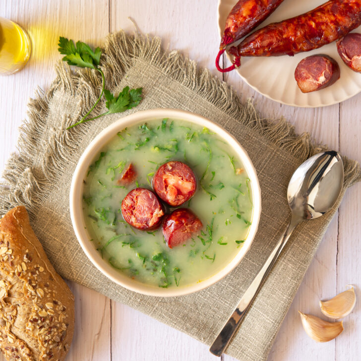

Caldo Verde - Green Soup

Description
Portuguese kale soup, caldo verde, is something you'll experience literally everywhere in Portugal,
from Lisbon's trendiest restaurants to farmhouses scattered at the edge of villages.
Ingredients
- 1/4 cup extra-virgin olive oil;
- 10 ounces chouriço, linguiça, or Spanish chorizo, sliced into 1/4-inch (6-mm) coins;
- Salt
- 2+ garlic cloves, sliced;
- 6 medium potatoes, peeled and roughly chopped;
- 8 cups cold water, or half homemade chicken stock or canned chicken broth, and half water;
- 1 pound collard greens or kale, stems removed, leaves cut into very thin slices;
- Freshly ground black or white pepper;
Steps
- In a large pot over medium heat, warm the oil. Add the chouriço and cook until lightly browned on both sides, 3 to 5 minutes.
- Using a slotted spoon remove the sausage to a plate. Try to let the sausage drain well into the pot; its fat will flavor the soup.
- Dump the onions into the pot. Sprinkle with salt and cook, stirring occasionally, until softened and translucent. Add the garlic and cook for 2 minutes more.
- Stir in the potatoes, add the water or combination of water and chicken stock, and bring to a boil. Reduce the heat so the soup gently simmers. Cook until the potatoes are almost tender, 10 to 20 minutes.
Remove from the heat and let the soup cool slightly.
- When the caldo verde has cooled a little, purée it using an immersion blender. (Tradition states that one slice and only one slice of chouriço is added to each bowl although some chefs like to add half the sausage to the soup before puréeing. It's your choice.)
- Add the kale to the soup, bring everything back to a boil, and then reduce the heat and simmer until tender, 2 to 5 minutes. Season with more salt, if needed, and pepper.
- Garnish with anything you desire, whether ground cinnamon, almonds, toasted coconut, or the very untraditional (though stunning) passion fruit pulp and seeds.
- Ladle the caldo verde into bowls and garnish with the remaining slices of chouriço. (The soup can be cooled, covered, and refrigerated overnight. Simply warm over low heat before serving.)